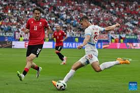

ევრო 2024: საქართველოსა და ჩეხეთის საფეხბურთო გუნდებს შორის შეხვედრა 1:1 დასრულდა



საქართველოს საფეხბურთო ნაკრებმა ევროპის ჩემპიონატზე F ჯგუფის მეორე ტურის მატჩში ჩეხეთის ნაკრებთან ფრედ, 1:1 ითამაშა. პირველი ტაიმის კომპენსირებულ მესამე წუთზე ჟორჟ მიქაუტაძემ თერთმეტმეტრიანით დააწინაურა საქართველოს ნაკრები 1:0. ანგარიში 59-ე წუთზე გაათანაბრა პატრიკ შიკმა. მატჩი გაიმართა ჰამბურგში, „ფოლკსპარკშტადიონზე“. საქართველოსა და ჩეხეთის ნაკრებები ისტორიაში პირველად შეხვდნენ ერთმანეთს.